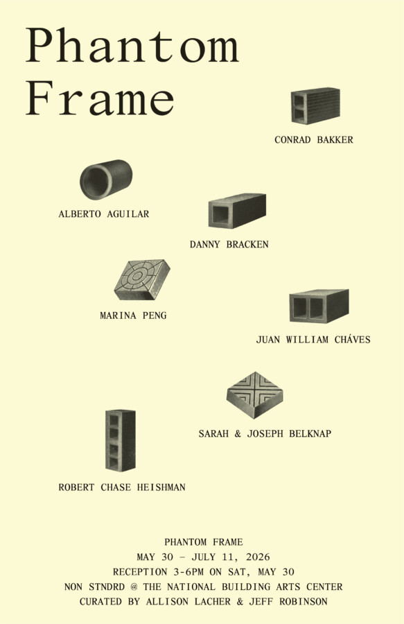

Phantom Frame
STNDRD Exhibitions is pleased to present Phantom Frame at NON STNDRD, an exhibition platform for contemporary art and site-responsive interventions located on the campus of the National Building Arts Center.
Phantom Frame will open with a free and public reception on Saturday, May 30, 2026, from 3:00–6:00 pm. The exhibition will remain on view through July 11 and features work by Alberto Aguilar, Conrad Bakker, Sarah and Joseph Belknap, Danny Bracken, Juan William Chávez, Robert Chase Heishman, and Marina Peng. Phantom Frame is curated by Allison Lacher and Jeff Robinson.
Informed by its proximity to one of the most expansive collections of built environment artifacts in the United States–that of the National Building Arts Center (NBAC)–and the industrial environment around it, Phantom Frame engages a site where architectural artifacts, industrial remnants, and landscape conditions persist beyond the structures and systems they once belonged to. The exhibition explores what survives when structure falls away and how fragments continue to generate new frameworks of meaning.
Phantom Frame begins with the architectural language of ornament, form, and structure, while also considering how fragments shape the frames through which meaning is constructed and understood. Expanding outward into broader considerations of attachment and detachment, context and reinterpretation, preservation and transformation, the exhibition ultimately reflects on the generative possibilities of incompleteness. It proposes that fragments need not point only toward loss or absence, but may instead offer new ways of understanding history, memory, and the unstable structures–physical, cultural, and emotional–that continue to shape lived experience.
Alberto Aguilar is a Chicago based artist that uses whatever material is at hand in an attempt to make a meaningful connection with the viewer. He does not distinguish his art practice from his other various life roles which allows him to make work wherever he is. He has shown and presented his work at various museums, galleries, storefronts, homes and street corners around the world. Some of these include the Queens Museum, El Torito Supermercado, The Minneapolis Institute of Art, the corner of Cesar Chavez Ave and North Broadway in Los Angeles, The Museum of Contemporary Art in Detroit, Chicago City Hall, The Museum of Contemporary Art in Chicago, Museo Del Jamon in Madrid, Spain, In front of the north lion at The Art Institute of Chicago, The Chicago River Jackson Bridge, El Cosmico Trailer Park, Marfa, TX, El Centro de Desarrollo de las Artes Visuales, Havana, Cuba, Iowa rest stop I-80. His work is in the collections of the Crystal Bridges Museum of American Art, The Jorge Lucero Study Collection, Soho House, Meta-Chicago, The National Museum of Mexican Art, The Office of Mayor of Chicago Mayor. Along with his daughter, Madleine, he organizes Mayfield, a multi-use space which operates on the grounds of his home. He is the recipient of the 3Arts Award and a 2025 US Latinx Fellow.
Conrad Bakker makes carved/painted sculptures and paintings of everyday objects, installing them in specific sites, consumer contexts, and gallery exhibitions so as to reveal and critically comment upon the political economies and relational networks between persons, things, and places. Conrad Bakker has exhibited his work internationally in venues that include Galerie Analix Forever (Geneva), Musée d’art contemporain de Lyon, France, Tate Modern (London), Fargfabriken Center for Contemporary Art and Architecture (Stockholm), the New Museum (New York), the Renaissance Society at the University of Chicago (Chicago), The Flag Art Foundation (New York), Contemporary Art Museum Houston, The Warehouse (Dallas), Boulder Museum of Contemporary Art, in mailboxes, via eBay auctions, and even on his front lawn. His work has been the subject of articles and reviews in Art Press, Frieze, Contemporary, Flash Art, Art Forum, Art World Magazine, ArtUS, Art Papers, Sculpture, The Chicago Tribune, The New Yorker, The New York Times, and Colossal. Bakker has been awarded individual artist fellowships from the Creative Capital Foundation, the Illinois Arts Council, and the Joan Mitchell Foundation Painters and Sculptors Grant Program. Conrad Bakker lives and works in Urbana, Illinois, making things and teaching in the School of Art and Design at the University of Illinois Urbana Champaign.
Sarah and Joseph Belknap are partners, interdisciplinary artists and educators. Stretching and playing with pareidolia and mythology, their work draws on the cosmos, deep time, conspiracy theories, science, and speculative fiction. Working as a team since 2008, their art has been exhibited in Chicago, San Franscisco, LA, Brooklyn, Detroit, Columbus, Minneapolis, Kansas City, St. Louis, and Oleśnica, Poland. In addition, they have presented performances, public programs and workshops at institutions throughout Chicago, including the Chicago Cultural Center, Hyde Park Art Center, Links Hall, the MCA, and through Experiments in Public Art in Boulder, Colorado. Their work has been shown in many group exhibitions and solo shows including: SFAI Galleries, the Columbus Museum of Art , The Arts Club of Chicago, the Chicago Artists’ Coalition, Western Exhibitions, Comfort Station, and Museum of Contemporary Art Chicago. Their work has been published in journals including ‘After Image’, the Chicago Tribune and books; most recently, ‘Weather as Medium’ by Janine Randerson, in the Leonardo Series through MIT Press.
Danny Bracken is a Michigan born artist based in Pittsburgh, Pennsylvania. His creative practice is concerned with how we perceive, experience, and connect to the people and places that surround us. The work examines the role of the physical in our progressively intangible existence, investigating our idealism for the future, our nostalgia for the past, and a present in which it is increasingly difficult to be “present.” Using video, sound, and physical objects, these projects range from large public installations to small-scale sculptures, from printed material to vinyl record releases. Born into a family of musicians, he employs sound as a central component of the work, integrating it into installations, film scores, and stand-alone recordings. Recently, his work has shifted into the curatorial field, and he currently serves as Curator and Director of Exhibitions at Mattress Factory, an artist-founded and artist-centered museum, international residency program and renowned producer of art in Pittsburgh. Here, he works with artists to develop, present, and interpret new site-specific works through open-ended and iterative engagements.